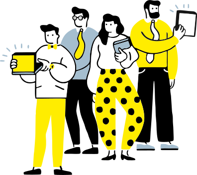

О фестивале
DISCOVER RAIF — 5-дневный интенсив, где вы сможете получить классные инсайты о карьерных возможностях в современном мире!
Каждый день вас ждут онлайн-вебинары с экспертами из разных направлений, статьи, подкасты, видео и общение в чатах. Следите за расписанием, чтобы ничего не пропустить.
Не забудьте присоединиться к официальному каналу фестиваля в канал #raif_ambassadors в Slack — там мы публикуем подборки и советы от наших коллег, а еще проводим розыгрыши.
Программа
Пн, 19 Апреля
Вт, 20 Апреля
Ср, 21 Апреля
Чт, 22 Апреля
Пт, 23 Апреля
Статья
«От ассистента до Product Owner — как вырасти внутри банка»
Перейти
Ольга Бринза
Product Owner
Своим опытом делится Ольга Бринза, которая за 5 лет в Райффайзенбанке прошла насыщенный путь. Это история о том, как выгорание приводит к важным поворотам, а целеустремленность помогает найти работу мечты.
Видеоролик
«DISCOVER RAIF — что вас ждет?»
Перейти
Включайте скорее, чтобы узнать больше о миссии нашего фестиваля!
Статья
«Пути карьерного движения»
Перейти
В каком направлении мне стоит развиваться? Кем я вижу себя через 5 лет? Какие навыки мне стоит развить, чтобы перейти на следующую ступеньку карьерной лестницы? Ответить на эти вопросы сразу не так просто. Для участников нашего фестиваля разработали классный RoadMap, который поможет спланировать путь к работе мечты.
Вебинар
«Карьера в Райфе: инструкция по применению», старт в 10:00
Перейти
Сергей Монин
председатель правления банка
Владимир Химаныч
HR-директор
Марина Кабирова
руководитель операционного управления, директор ЦОСО
Михаил Хаджабекян
руководитель управления корпоративных продуктов
Ольга Полковникова
модератор, руководитель отдела по подбору персонала
Руководители нескольких отделов проведут дискуссию в режиме онлайн: обсудят важность карьерного роста «вширь» в 21 веке, расскажут, как расширять свое влияние внутри компании, и поделятся ключевыми инструментами для развития в Райффайзенбанке.
Подкаст-интервью
«Как говорить об ЭТОМ»
Перейти
Яна Крайнова
младший системный аналитик
Мария Тезикова
руководитель IT-рекрутмента
Соня Бахметьева
ведущая, контент-менеджер команды по развитию бренда работодателя
«Я проработал на одной позиции около 5 лет. Сейчас пришел к тому, что хочу попробовать свои силы в другом отделе. Как сказать руководителю?»
Яна Крайнова и Мария Тезикова рассмотрят карьерный диалог через призму личного опыта и расскажут, как говорить с руководителем о карьере, стоит ли отпускать или удерживать сотрудников и почему подобные переходы взаимовыгодны
для обеих сторон.
Видео
«Premium Manager»
Перейти
Евгения Варзиева
финансовый консультант группы продаж сегмента премиум
Многие полагают, что премиальный менеджер в банке — улыбчивый специалист, который в основном радует вас чашечкой кофе и «индивидуальным подходом». Евгения поможет разобраться, так ли это на самом деле, и расскажет о собственном опыте — как она выросла до позиции Premium Manager и что входит в ее обязанности.
Видео
«Product Owner»
Перейти
Полина Гуляева
Product Owner команды SME Finance
Продакт-оунер — один из ключевых игроков в команде. Он отвечает за продукт на каждом этапе его создания, поэтому в курсе всех потребностей пользователя и возможностей команды. Полина Гуляева на примере своей карьеры поделится советами, как стать классным продактом.
Вебинар
«Карьера Sales», старт в 10:00
Перейти
Дмитрий Средин
руководитель управления по работе с крупными компаниями
Ольга Полковникова
руководитель отдела подбора персонала
Третий день фестиваля открывают Дмитрий Средин и Ольга Полковникова: наши спикеры расскажут про плюсы работы и возможности для роста в продажах, поделятся советами для будущих сейлзов и раскроют главный секрет — на что именно обращает внимание рекрутер, который ищет Sales Manager.
Подкаст-интервью
«Как личный бренд и коммьюнити влияют на карьеру»
Перейти
Юрий Ветров
руководитель отдела управления брендом и цифровым клиентским взаимодействием
Соня Бахметьева
ведущая, контент-менеджер команды по развитию бренда работодателя
В этом подкасте говорим о «сугубо личном» — личном продвижении. Юрии Ветров расскажет о том, как построить сильный личный бренд и почему важно взаимодействовать с комьюнити. Бонус для слушателей — разберем популярные мифы на эту тему и поделимся крутыми инструментами для карьерного роста.
Видеоролик
«Payroll Manager»
Перейти
Карина Плевкова
Payroll Manager
Один из самых удобных способов перечислять зарплату — пользоваться зарплатным проектом, который позволяет делать начисления через один банк. Этим процессом руководит Payroll Manager — смотрим ролик, где Карина Плевкова расскажет о своем карьерном пути и ключевых обязанностях на этой позиции.
Видеоролик
«Tech Lead»
Перейти
Андрей Личман
Tech Lead команды
Тройка лидеров в команде не может обойтись без техлида — проактивного и ответственного разработчика, который несет ответственность за качество всей технической работы на проекте. Делимся видео с Андреем Личманом, который принял участие в нашем блиц-опросе и рассказал, каким должен быть классный техлид.
Вебинар
«Карьера в IT», старт в 10:00
Перейти
Виктор Цветков
Senior Expert
Светлана Лукьяненко
Tech Lead команды Collection
Лиза Тихонова
ведущая вебинара, руководитель команды по развитию бренда работодателя и найму молодежи
Эксперты примут участие в онлайн-дискуссии о карьерном пути в IT: обсудят развитие по принципу «чем шире — тем круче» и конкретные инструменты для карьерного роста.
Подкаст-интервью
«Карьерные повороты, которые не случились»
Перейти
Петр Терехов
руководитель отдела управления брендом и цифровым клиентским взаимодействием
Соня Бахметьева
ведущая, контент-менеджер команды по развитию бренда работодателя
Фраза «пока не готовы предложить эту позицию» на собеседовании звучит как приговор — хочется бежать из компании и больше не возвращаться. Петр Терехов решил не сдаваться после своего первого отказа — слушайте подкаст, где он делится своей историей неудавшегося перехода и рассказывает, как этот опыт помог ему двигаться дальше.
Видеоролик
«Риск-менеджер и кредитный аналитик»
Перейти
Сергей Схимников
руководитель отдела по управлению кредитными рисками среднего бизнеса
В банковской сфере есть своего рода ясновидящие — риск-менеджеры и кредитные аналитики. Они видят то, чего обычный обыватель не увидит никогда. Одним из таких специалистов является Сергей Схимников, который анализирует кредитные риски — смотрим видео и узнаем о его карьерном пути подробнее.
Видеоролик
«Relationship Manager»
Перейти
Алексей Марков
руководитель сектора развития и продаж в ключевых зарплатных компаниях
Кому, как не Relationship Manager, знать все о том, как привлекать и сопровождать клиентов по зарплатным проектам. Алексей Марков подходит к этому процессу особенно искусно — предлагаем включить ролик и погрузиться в это направление еще глубже.
Статья
«Все идет по плану: что такое ИПР и как он поможет в карьере?»
Перейти
Светлана Павленова
ведущий специалист по оценке и развитию персонала
Помогает структурировать цели, расставлять приоритеты при развитии, анализировать слабые и сильные стороны — да, без индивидуального плана развития сотруднику сейчас точно не обойтись. Светлана Павленова расскажет, зачем нужно заполнять план развития, и поделится 7 секретами «успешного ИПР».
Видеоролик
«Разговор с руководителем»
Перейти
Как сообщить руководителю, что вы хотите работать в другой команде, и при этом не облажаться? Смотрите наш ролик, запоминайте ключевые правила делового общения и учитесь на ошибках других!


О карьере будут говорить
Сергей Монин
Председатель правления банка
Владимир Химаныч
HR-директор
Ольга Полковникова
Руководитель отдела по подбору персонала
И другие участники фестиваля
Интересное
А как еще узнать про карьеру в банке?
Блог «Райффайзен карьера» на ИнтранетеВдохновляющие истории карьерных поворотов, лайфхаки от рекрутеров и анонсы карьерных мероприятий
Блог «Райффайзен Развитие» на ИнтранетеTelegram-канал «Райффайзен Развитие»
Полезная информация про возможности обучения в банке, анонсы тренингов и образовательных мероприятий
Карьерный порталВакансии для сотрудников Райффайзенбанка в России и в Европе
Лайфхак: на сайте можно подписаться на персонализированную подборку вакансий. Вы задаете в поиске параметры интересной вам позиции и справа появляется кнопка «Подписаться». Кликните на нее, и раз в неделю вам будет приходить подборка релевантных вакансий на почту.
Telegram-канал «ITeam»
Новости IT, вакансии, информация про сообщества и анонсы IT-мероприятий в банке
РекрутерЕсли вам хочется узнать больше о какой-то вакансии, вы всегда можете написать рекрутеру — он ответит на ваши вопросы. На карьерном портале под каждой вакансией есть контакт конкретного специалиста, который может вам помочь.
А что почитать?
«Просто будьте лучшими. И вас обязательно заметят»История Аделины Цой, которая поработала в двух разных отделах Райфа и даже в другой компании, прежде чем попала на позицию мечты.
Как найти работу внутри банкаИстория Марины Полат, которая за 10 лет в Райфе сменила несколько направлений (и не планирует останавливаться)
«Всегда ищите новые вызовы»: Алексей Капустин о карьереКарьерные повороты — как образ жизни. Алексей Капустин рассказывает, почему он всегда выбирает перемены и как оказался в Вене
Cколько людей переходят внутри банка? Показываем статистикуЯркая статья-инфографика о том, сколько наших коллег перешли внутри банка за последние три года
Внутренняя ротация: как понять, подходит ли мне вакансияЛайфхаки от рекрутера о том, как анализировать и выбирать вакансии
И еще много других полезных материалов в блоге «Райффайзен карьера» на Интранете
А куда сходить?
Карьерные завтраки
Серия ежемесячных онлайн-трансляций, на которые мы приглашаем интересных гостей из разных сфер — с ними мы обсуждаем карьеру и возможности внутри Райфа, говорим об особенностях разных вакансий и вдохновляемся историям успеха. Вы уже можете посмотреть записи завтраков «Как откликнуться на вакансию мечты» и «Что нужно знать о риск-менеджменте».
Как не пропустить следующий завтрак: мы делаем рассылку на весь банк за неделю до события, а также публикуем анонс в блоге «Райффайзен карьера». Следующее мероприятие пройдет в конце мая. Следите за новостями